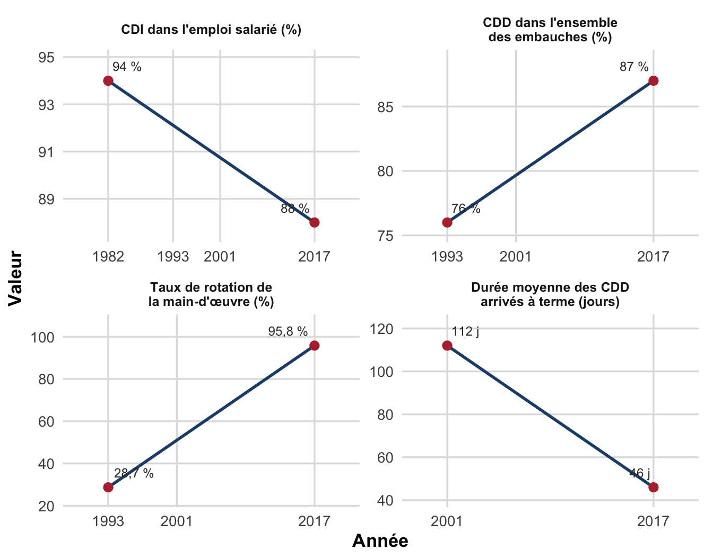
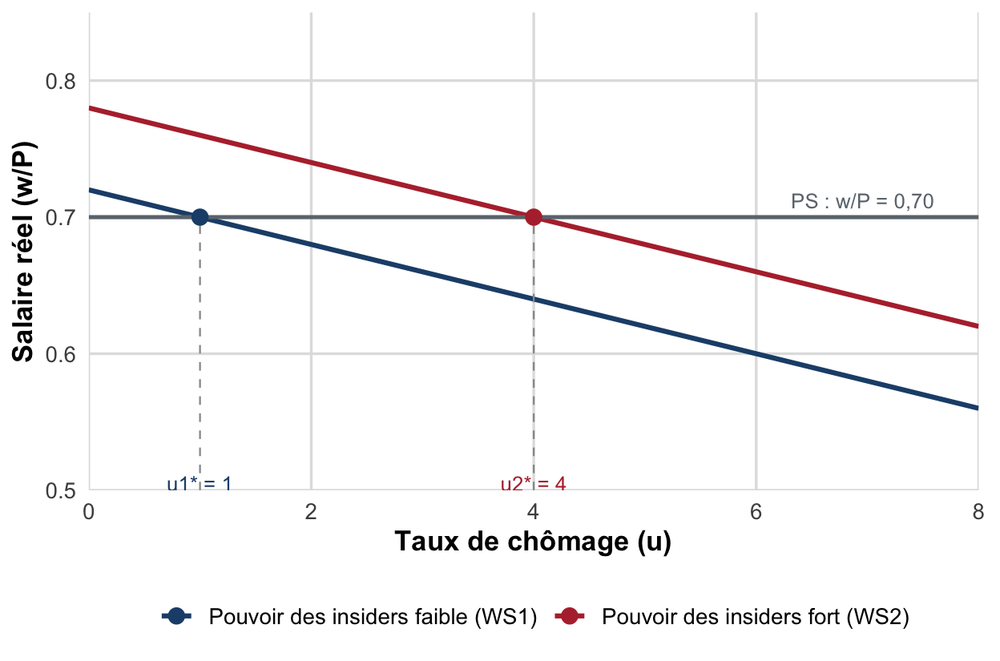

TD 3 : Typologies & segmentation
Le dualisme CDI/CDD, la rotation de la main-d’œuvre et la théorie insiders-outsiders
Dossier de travaux dirigés : typologie du chômage, dualisation du marché du travail français, calcul du taux de rotation et anticipation du modèle WS-PS.
Objectifs de la séance
À l’issue de ce TD, vous saurez :
- Mobiliser sans erreur la typologie du chômage (frictionnel, classique, technologique, d’inadéquation, keynésien, technique) et la distinction structurel/conjoncturel, volontaire/involontaire.
- Définir la segmentation primaire/secondaire du marché du travail et le phénomène de dualisation entre CDI et contrats courts.
- Calculer un taux de rotation de la main-d’œuvre et interpréter son évolution en France depuis 1993.
- Présenter les mécanismes de la théorie insiders-outsiders (Lindbeck & Snower, 1986) et son lien avec le modèle WS-PS étudié au chapitre suivant.
- Lire et discuter des données réelles (Dares) et un article de presse sur la précarisation de l’emploi.
NotePré-requis
Ce TD prend appui sur la Partie 1 du Chapitre II (spécificités du marché du travail, indicateurs, halo du chômage, typologie du chômage, voir cours/chap2.qmd, §1.3-1.5). Le modèle WS-PS et la théorie insiders-outsiders y sont mentionnés en anticipation (§2.3) : ils seront formalisés en détail au TD 5. Il n’est donc pas nécessaire de maîtriser la dérivation complète des courbes WS et PS pour traiter l’exercice 3(c) : une lecture qualitative du graphique suffit, complétée par un calcul simple.
Exercice 1 : Définitions et QCM
1.1 Association terme-définition
Associez chacun des cinq termes ci-dessous à sa définition (une définition par terme).
Termes : (1) Segmentation primaire ; (2) Segmentation secondaire ; (3) Dualisation du marché du travail ; (4) Taux de rotation de la main-d’œuvre ; (5) Insiders.
Définitions :
A. Salariés en poste qui utilisent leur position (ancienneté, compétences spécifiques, protection du contrat) pour préserver leur salaire et leur emploi lors des négociations.
B. Moyenne du taux d’entrée et du taux de sortie d’une entreprise ou d’un secteur, rapportés à l’effectif moyen sur une période donnée.
C. Compartiment du marché du travail regroupant les emplois stables, qualifiés, offrant de bonnes perspectives de carrière et un accès à la formation interne.
D. Compartiment du marché du travail regroupant les emplois précaires, peu qualifiés, à forte rotation et faible perspective de carrière.
E. Écart croissant, sur un même marché du travail national, entre des salariés en emploi stable (CDI) et des salariés multipliant les contrats courts (CDD, intérim), sans convergence progressive de ces deux situations.
AstuceIndice (à consulter seulement en cas de blocage)
Trois de ces définitions se recoupent avec la théorie insiders-outsiders, développée en anticipation du modèle WS-PS (chapitre II, §2.3) : le pouvoir de négociation des insiders repose précisément sur l’existence d’un segment primaire protégé.
1.2 QCM : cochez la ou les bonnes réponses
Question 1. Le chômage structurel se distingue du chômage conjoncturel car :
- il résulte de rigidités durables et d’inadéquations structurelles du marché du travail ;
- il peut être résorbé par une simple relance de la demande à court terme ;
- il appelle plutôt des réformes structurelles qu’une politique de relance ;
- il disparaît automatiquement lors d’une reprise conjoncturelle.
Question 2. Le chômage classique est qualifié de « volontaire » par l’analyse néoclassique car :
- les entreprises n’embauchent pas car le salaire réel, fixé institutionnellement, est supérieur au salaire d’équilibre ;
- il traduit une insuffisance de la demande anticipée par les entreprises sur le marché des biens ;
- à ce salaire, tout travailleur souhaitant un emploi devrait normalement en trouver un si le salaire réel s’ajustait librement à la baisse ;
- il résulte d’un problème d’asymétrie d’information entre employeurs et salariés.
Question 3. Le chômage frictionnel est qualifié d’« inévitable » car :
- il correspond au délai normal de transition entre deux emplois, même dans une économie proche du plein emploi ;
- il disparaît totalement dans un marché du travail parfaitement flexible ;
- il n’est pas lié aux transitions habituelles de la vie professionnelle ;
- il subsiste même lorsque le nombre d’emplois vacants égale approximativement le nombre de personnes en recherche d’emploi.
Question 4. Le segment « primaire » du marché du travail se caractérise par :
- des emplois stables, qualifiés, avec de bonnes perspectives de carrière et de formation interne ;
- une forte proportion de contrats courts et une rotation élevée de la main-d’œuvre ;
- une exposition plus faible au risque de chômage frictionnel répété ;
- l’essentiel des créations nettes d’embauches observées en France depuis les années 1990.
Question 5. Le taux de rotation de la main-d’œuvre, tel que mesuré par la Dares, se définit comme :
- la moyenne du taux d’entrée et du taux de sortie, rapportés à l’effectif moyen ;
- la part des CDD dans l’ensemble des embauches d’une entreprise ;
- un indicateur qui peut augmenter fortement même si l’emploi total reste stable, dès lors que la durée des contrats se raccourcit ;
- un indicateur exclusivement pertinent pour mesurer les licenciements économiques.
Question 6. Selon la théorie insiders-outsiders (Lindbeck et Snower 1986) :
- les salariés en poste (« insiders ») utilisent leur position pour négocier un salaire supérieur au salaire de marché, au détriment des chômeurs (« outsiders ») ;
- les coûts de rotation (recrutement, formation, procédure de licenciement) renforcent le pouvoir de négociation des insiders ;
- les outsiders peuvent toujours faire baisser le salaire négocié en se proposant de travailler pour moins cher que les insiders ;
- elle s’inscrit dans le cadre plus large du modèle WS-PS, où le chômage résulte de facteurs institutionnels plutôt que d’une insuffisance conjoncturelle de la demande.
Exercice 2 : Lecture de données : la dualisation du marché du travail français (1982-2017)
Le tableau ci-dessous rassemble quatre indicateurs tirés d’une étude de la Dares sur l’évolution des embauches et des ruptures de contrat en France entre 1982 et 2017 (Milin 2018).
| Indicateur | Année initiale | Valeur | Année récente | Valeur |
|---|---|---|---|---|
| Part des CDI dans l’emploi salarié (hors intérim) | 1982 | 94 % | 2017 | 88 % |
| Part des CDD dans l’ensemble des embauches (CDD + CDI) | 1993 | 76 % | 2017 | 87 % |
| Taux de rotation de la main-d’œuvre (établissements ≥ 50 salariés) | 1993 | 28,7 % | 2017 | 95,8 % |
| Durée moyenne des CDD arrivés à terme | 2001 | 112 jours | 2017 | 46 jours |
Questions.
- Calculez la variation (en points) de chacun des quatre indicateurs entre l’année initiale et l’année récente. Lequel connaît la variation relative (en %) la plus marquée ?
- La part des CDI dans l’emploi salarié ne recule que de 6 points entre 1982 et 2017, alors que le taux de rotation de la main-d’œuvre est multiplié par plus de trois sur une période comparable (1993-2017). Ces deux évolutions sont-elles contradictoires ? Expliquez en mobilisant la notion de segmentation primaire/secondaire.
- Au chapitre II, on affirme que « l’emploi n’est pas un stock à partager, mais un flux à canaliser ». Lequel des quatre indicateurs de ce tableau illustre le mieux cette idée, et pourquoi ?
- Le document source (Milin 2018) indique qu’en 2017, 30 % des CDD ne durent qu’une seule journée, et que les salariés n’obtenant ni CDI ni CDD de plus d’un mois sur un trimestre cumulent en moyenne 3,5 contrats courts sur cette période. Reliez ce constat à la définition de la dualisation du marché du travail donnée en cours.
Exercice 3 : Exercice analytique
3(a) : Calcul du taux de rotation d’une entreprise
Taux de rotation de la main-d’œuvre. Moyenne du taux d’entrée (embauches / effectif moyen) et du taux de sortie (départs / effectif moyen) sur une période donnée (Milin 2018).
L’entreprise Delta Logistique emploie en moyenne 250 salariés sur l’année. Elle a réalisé 235 embauches (essentiellement des CDD de courte durée pour faire face aux pics d’activité) et enregistré 210 départs (fins de CDD, quelques démissions) au cours de la même année.
- Calculez le taux d’entrée, le taux de sortie, puis le taux de rotation de la main-d’œuvre de Delta Logistique.
- Comparez ce résultat au taux de rotation national de 2017 (95,8 %, Table 1). Le marché du travail interne de cette entreprise vous paraît-il plutôt stable ou plutôt « liquide » ?
3(b) : Taux de variation d’un indicateur national
Le taux de rotation national de la main-d’œuvre (établissements de 50 salariés ou plus) est passé de 28,7 % en 1993 à 95,8 % en 2017 (Milin 2018).
- Calculez la variation, en points de pourcentage, de cet indicateur sur la période.
- Calculez le taux de variation relatif (en %) de cet indicateur sur la période. Combien de fois le taux de rotation a-t-il été multiplié ?
- Que révèle cette évolution sur la manière dont les entreprises françaises gèrent leur main-d’œuvre depuis vingt-cinq ans ?
3(c) : Anticipation du modèle WS-PS : le rôle du pouvoir de négociation des insiders
Rappel (chapitre II, §2.3) : dans le modèle WS-PS, l’équation de fixation des salaires s’écrit \(W = P \cdot F(u, z)\), où \(z\) regroupe les déterminants institutionnels du pouvoir de négociation des salariés, dont le pouvoir de négociation des insiders. Une hausse de \(z\) déplace la courbe WS vers le haut.
Considérons deux scénarios, caractérisés par des courbes WS différentes (le paramètre \(z\) étant plus élevé dans le second) et une même courbe PS :
\[ WS_1 : \dfrac{W}{P} = 0{,}72 - 0{,}02\,u \qquad WS_2 : \dfrac{W}{P} = 0{,}78 - 0{,}02\,u \qquad PS : \dfrac{W}{P} = 0{,}70 \]

- Calculez algébriquement le taux de chômage d’équilibre \(u_1^*\) (scénario WS1) puis \(u_2^*\) (scénario WS2). Vérifiez votre résultat sur le graphique.
- En vous appuyant sur la théorie insiders-outsiders (Lindbeck et Snower 1986), expliquez pourquoi les outsiders (les chômeurs) ne parviennent pas, dans ce modèle, à faire baisser le salaire négocié malgré un chômage plus élevé en \(u_2^*\).
- Citez deux mécanismes concrets qui, sur le marché du travail français, peuvent renforcer le pouvoir de négociation des insiders (indice : relisez la définition du salaire d’efficience au chapitre II, §2.3).
Exercice 4 : Question de réflexion (dissertation courte)
ImportantSujet
« Le dualisme croissant entre CDI et contrats courts traduit-il avant tout un choix d’adaptation des entreprises françaises à l’incertitude économique, ou l’émergence d’un clivage structurel entre insiders protégés et outsiders précarisés sur le marché du travail ? »
Consignes : réponse rédigée de 30 à 40 lignes environ, avec une introduction problématisée, un développement organisé et une conclusion. Vous mobiliserez impérativement les notions suivantes : segmentation primaire/secondaire, dualisation, taux de rotation de la main-d’œuvre, théorie insiders-outsiders. Vous pourrez vous appuyer sur les données de l’exercice 2 et sur l’article de Laurent Jeanneau proposé en « Pour aller plus loin ».
AvertissementErreur fréquente
Ne réduisez pas le sujet à une opposition binaire « pour ou contre les CDD » : les deux lectures proposées (adaptation conjoncturelle des entreprises / clivage structurel insiders-outsiders) ne sont pas mutuellement exclusives. Une bonne copie articule les deux échelles de temps (l’ajustement de court terme des entreprises à l’incertitude, et la dynamique de long terme de la segmentation du marché du travail) plutôt que de trancher artificiellement entre les deux.
Pour aller plus loin
AstuceRessources complémentaires
- Vidéo : « T’as Capté ? Épisode 5 : Le Chômage », Dessine-moi l’éco : youtube.com/watch?v=yRvxF4JTeKc. Une synthèse accessible de la typologie du chômage, à revoir avant de traiter l’exercice 1.
- Article : Laurent Jeanneau, « Précarité : pourquoi la baisse du chômage n’a pas fait reculer la pauvreté », Alternatives Économiques, juin 2025. Montre que la baisse du taux de chômage depuis 2015 (de 10,3 % à 7,3 %) ne s’est pas traduite par un recul de la pauvreté, notamment du fait de la précarisation des emplois créés (hausse de l’intérim et des CDD entre 2015 et 2018) : un prolongement empirique direct de l’exercice 2.
- Étude complète : Milin K. (2018), « CDD, CDI : comment évoluent les embauches et les ruptures depuis 25 ans ? », Dares Analyses n° 026 (Milin 2018) : source des données de l’exercice 2, avec des compléments par secteur d’activité et catégorie socioprofessionnelle.
- Référence fondatrice : Doeringer P. B. et Piore M. (1971), Internal Labor Markets and Manpower Analysis (Doeringer et Piore 1971) : l’ouvrage à l’origine de la distinction entre marché du travail primaire et marché du travail secondaire, mobilisée dans ce TD.
Les références
Doeringer, Peter B., et Michael J. Piore. 1971. Internal Labor Markets and Manpower Analysis. D.C. Heath.
Lindbeck, Assar, et Dennis J. Snower. 1986. « Wage Setting, Unemployment, and Insider-Outsider Relations ». American Economic Review 76 (2): 235‑39.
Milin, Kévin. 2018. CDD, CDI : comment évoluent les embauches et les ruptures depuis 25 ans ? No. 026. Dares Analyses.